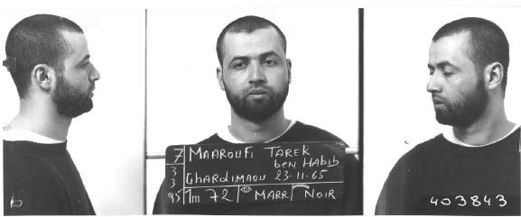
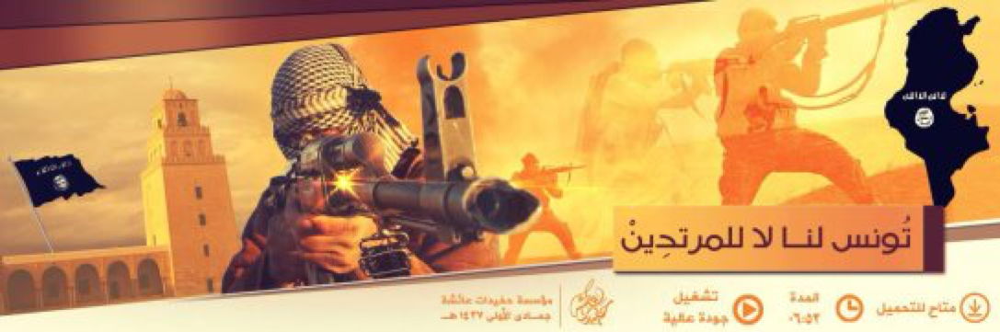

Tunisia’s foreign fighter problem and its battle against jihadi-salafi violence have grown dramatically since 2011, but the struggle is far from new. Tunisians have fought in foreign conflicts, including in Afghanistan in the 1980s and again after 2001, as well as in Chechnya, the Balkans, Mali, and Iraq following the U.S.-led invasion in 2003. Tunisians have also plotted and launched terrorist attacks and operated recruitment networks across Europe, the Middle East, and North Africa. Most but not all of these Tunisian fighters were motivated in part by jihadi-salafi ideology.
Before 2011, Tunisians joined foreign jihadi-salafi campaigns in smaller numbers than other North African nationals. Around 400 Tunisians were among the ranks of the “Afghan Arabs” fighting against the Soviet Union in the 1980s, compared to an estimated 2,800 Algerians and 2,000 Egyptians. According to 2006 estimates, Tunisians and Moroccans together constituted around five percent of foreign fighters in Iraq while Algerians represented around 20 percent.
The legacy of Tunisian fighters was significant despite their relatively small numbers. Veteran Tunisian jihadi-salafists built networks of recruiters, facilitators, and financiers that provided an infrastructure for the wider mobilization of Tunisian fighters after 2011.
The legacy of Tunisian fighters was significant despite their relatively small numbers. Veteran Tunisian jihadi-salafists built networks of recruiters, facilitators, and financiers that provided an infrastructure for the wider mobilization of Tunisian fighters after 2011.
In 2000, Tunisian nationals Tarek Maaroufi and Seifallah Ben Hassine, also known as Abu Iyadh al-Tunisi, founded the Tunisian Combatant Group. The group became an important vehicle for Tunisians’ participation in global jihadi-salafi networks, recruiting fighters to train and fight with al Qaeda in Afghanistan, providing logistical support to Algerian jihadists linked to al Qaeda in the Islamic Maghreb, and plotting attacks from a constellation of Europe-based cells. Ben Hassine had spent time in Afghanistan and Chechnya before he was arrested by Turkey and extradited to Tunisia in 2003.
His associate Tarek Maaroufi, who also spent time in Afghanistan, ran the Belgian branch of the Tunisian Combatant Group and in the early 2000s was implicated in a number of specific plots to attack a NATO air base and the U.S. embassy in Paris. Another Tunisian national and leader of al Qaeda’s Italian branch, Sami Essid bin Khamis, collaborated with a Libyan national to plan the 2000 Strasbourg Cathedral plot.
In the two decades before 2011, Tunisians suspected of al Qaeda links were arrested in Europe, North Africa, the Middle East, Turkey, Pakistan, and the United States. In 2002 Tunisian courts convicted 34 Tunisians of recruiting other Tunisians residing in Europe to join armed groups in Afghanistan, Bosnia, and Chechnya. In 2009, General David Petraeus, then-head of the U.S. Central Command, drew a connection between Tunisia-based networks and a string of suicide bombings in Iraq.
Ben Ali’s political and security policies had direct and indirect consequences for Tunisian fighters and jihadi-salafists. Under Ben Ali, the Tunisian government arrested and detained thousands of political Islamists in the 1990s as well as salafists and jihadi-salafists. Not all opposition groups espoused violence or takfirism. Yet, the regime made little distinction between actors harboring violent jihadi-salafi motives and those presenting legitimate political opposition. A new generation of young men was incarcerated under a sweeping counterterrorism law passed in 2003. In some cases jihadi-salafists were tacitly encouraged to leave the country, including to join al Qaeda–linked groups fighting in Iraq, where the government assumed they would likely die on the battlefield and not return. At the same time the government suppressed most overt religious expression and debate not sanctioned by the state, creating a religious vacuum that salafists and jihadi-salafists would later seek to fill.
In some cases jihadi-salafists were tacitly encouraged to leave the country, including to join al Qaeda–linked groups fighting in Iraq, where the government assumed they would likely die on the battlefield and not return.
Meanwhile, the Ben Ali regime regulated and monitored smuggling and informal trade networks connecting Tunisia to neighboring countries. These smuggling networks not only provided a critical economic lifeline for Tunisian border areas but also became conduits for weapons and fighters en route to conflict zones, and eventually back into Tunisia.
All these historical factors converged after 2011 as veteran jihadi-salafists returned to a Tunisia reeling from ongoing upheaval and as border controls frayed across North Africa.
Today, Tunisians make up one of the largest national groups of foreign fighters in Syria and Iraq as well as Libya. They play a variety of combat, administrative, and command roles and have perpetrated numerous suicide attacks. They continue to leave Tunisia, even as hundreds have returned home.
Most Tunisian fighters are young men in their twenties, but beyond age, no clear profile has emerged. The diversity of Tunisian recruits, along with their sheer scale, underscores the generational challenge that fighting radicalism poses for Tunisia.
The Tunisian government’s tallies of its citizens fighting abroad often differ from external estimates. In 2013, officials publicly placed the number of Tunisians fighting in Syria at 800. By the end of 2014, Tunisia’s interior minister acknowledged that the number was between 2,500 and 3,000. As of late 2015 and early 2016, the government claims to have specific information of 2,500 Tunisians fighting abroad with an additional 500 suspected fighters, bringing the total Tunisian government estimate to approximately 3,000. Independent estimates from early 2016 range from 6,000 to 7,000 Tunisians fighting in both Syria and Libya.
Syria has been the primary destination for Tunisian recruits, but Tunisians are also an increasingly important component of militant groups in Libya. The United Nations estimated in mid-2015 that up to 1,500 Tunisians were fighting in Libya at that time, and their numbers have grown since. The Islamic State group’s ranks in Libya have swelled to as many as 6,000 fighters, according to 2016 U.S. military estimates, most of whom are non-Libyan, and Tunisians are believed to represent a majority of the ISG’s foreign fighter cadre there.
It is important to note that these figures are not exact. Government estimates are generally based on a compilation of sources including reports from families of fighters, prison rolls, public notices of battlefield deaths, social media postings, police records, and travel information.
Syria has been the primary destination, but Tunisians are an increasingly important component of militant groups in Libya.
The first waves of Tunisian fighters arrived in Syria during the early years of the Syrian conflict. Most recruits gravitated at first toward Jabhat al-Nusra, al Qaeda’s affiliate in Syria, with smaller numbers joining the secular Free Syrian Army and other groups with a range of goals and ideological positions. In some cases, young Tunisians did not know which group they would end up joining until they arrived in Syria. Since 2015, most Tunisian recruits traveling to Syria or Libya have joined the Islamic State group, which now dominates the jihadi-salafi arena and pursues aggressive recruitment campaigns.
Tunisians play a range of roles in armed groups according to their background and skills. In the early years of the Syrian war, Tunisians were reported to serve in more junior positions than other North African fighters. Despite their relative inexperience, Tunisian recruits acquired a reputation as fierce fighters who were committed to the state-building project of the Islamic State group. Tunisians are also used frequently as suicide bombers in both Syria and Libya, while some rise to the rank of operational commander of small units.
The Islamic State group also reportedly seeks educated Tunisians to fill administrative roles. There are accounts of some low-level Tunisian judges with the group in Syria, while other Tunisian recruits work in the fields of information technology and in media production. Tunisian men and women help produce and disseminate a range of propaganda materials from Syria and Libya as well as within Tunisia.
Tunisian foreign fighters are mostly young men, but they hail from a wide range of backgrounds, making detection and profiling difficult. Fighters come from both urban and rural areas, the coast and interior, and from a range of socioeconomic conditions. Some dropped out of primary school, while others have advanced degrees; some were chronically unemployed, and others held steady jobs. Known recruits include sports stars, models, and rappers as well as students, engineers, delivery boys, street vendors, and unemployed school dropouts. The criminal and militant histories of Tunisia’s jihadi-salafi recruits also vary. Some never committed a serious crime before their enlistment, while others previously spent time in jail for drug-related charges and petty crime or fought in prior jihadi-salafi conflicts.
Tunisian foreign fighters are mostly young men, but they hail from a wide range of backgrounds, making detection and profiling difficult.
While most fighters are men, Tunisian women have also joined armed groups as members in their own right, often playing roles in propaganda and online outreach efforts. The government claims to have specific information on at least 50 women who have travelled to Syria to join jihadi-salafi groups. However, authorities suspect the actual number of women who have joined armed groups abroad in some capacity is much higher. In December 2015, Tunisian authorities estimated that around 700 Tunisian women had joined armed groups abroad or were in Tunisian prisons on terror charges. Security forces have raided a number of cells within Tunisia alleged to specialize in recruiting women to join or marry into jihadi-salafi groups. Authorities have also arrested Tunisian women accused of supporting ISG media and propaganda affiliates from within Tunisia: in November 2015, the Ministry of Interior publicly announced the arrest of seven women charged with maintaining numerous media accounts for the Islamic State group in Tunisia.
Although the numbers of women participating in armed groups in some capacity are significant, the current wave of Tunisian female recruitment to militant jihadi-salafi groups remains understudied, and its dynamics are not well-understood even within Tunisia.
Joining radical groups answers a range of social, economic, personal, and religious questions facing many disenfranchised Tunisian youth, and the motives of each recruit vary. Radicalization, explored more fully in a following section, is both an intensely personal process and one that depends on interconnectivity. A diffuse web of online and offline actors work systematically to recruit and mobilize young Tunisian men and women to join jihadi-salafi groups.
The Islamic State group targets Tunisians with tailored propaganda efforts through videos and messaging posted on Facebook, Twitter, and other social media outlets. These recruitment videos often feature Tunisian jihadists speaking directly to their countrymen in Tunisian Arabic and use iconic Tunisian imagery like the Okba ibn Nafaa Mosque in Kairouan. Yet while online networks are active and play a role in persuading young people to join militant groups, most Tunisian fighters are recruited through people they already know.
...while online networks are active and play a role in persuading young people to join militant groups, most Tunisian fighters are recruited through people they already know. Family ties, friends, social connections, or figures at a local mosque are often the deciding influences.
Family ties, friends, social connections, or figures at a local mosque are often the deciding influences. Reports abound of Tunisians following in the footsteps of siblings, cousins, friends, and neighbors who have joined armed groups or of acquaintances making the journey together. Some analysts estimate that as many as a third of Tunisian fighters originate from three areas: Ben Guerdane, Bizerte, and Greater Tunis. The radicalization process is often quick and only sometimes visible to friends and family. Anecdotal evidence suggests that many recruits who showed little political conviction or religious ardor underwent a transformation in a period of weeks or months before disappearing.
Next: Domestic Context